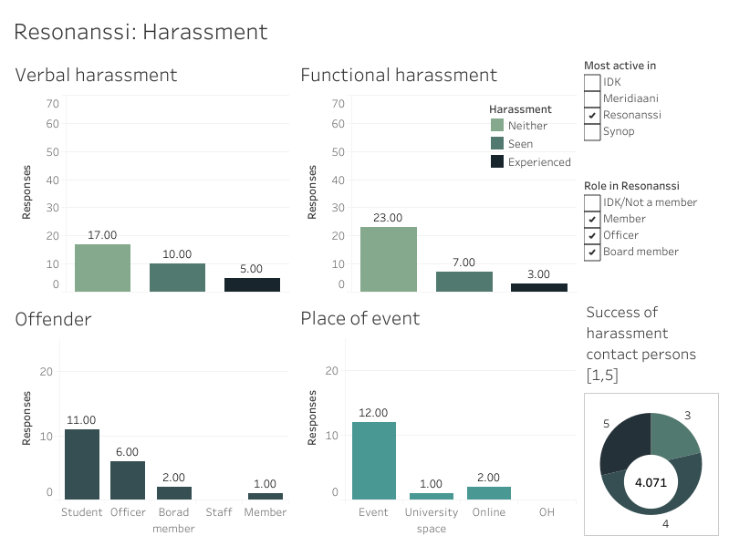

The first chart shows if the respondents found the atmosphere open and exciting in the organisation. 1=agree, -1=disagree and o=neutral.
The value is an average calculated over all non-zero responses and grouped by the organisation they're most active in.
Level of activeness refers to how active the respondent is in the organisation they're most active in.
Measures for Resonanssi shows if the respondents agreed with the given statements, 1=agree, -1=disagree, 0=neutral.
The plotted value is an average taken over al non-zero values. The given statements were
I feel safe in the organisation and its events.
The organisation is accessible to everyone.
I can be my genuine self in the organisation.
The actives, officals, board members, and other members are equal.
I'm not scared or anxious to participate in the organisation's event and activities.
I feel like I'm part of the organisation and its community
The next bar chart shows what proportion of respondents feel like
one can freely and equally express being part of different minorities in the community. Activeness
in Resonanssi shows the distribution of activeness within the respondents. This is included for
interactivity.
The first charts show how many respondents have seen or experienced verbal or functional bullying or if they haven't. The bottom two show how the sum of reported offenders and places of bullying by the respondents. Please note, that these answers aren't organisation specific.
The first charts show how many respondents have seen or experienced verbal or functional harassment or if they haven't. The bottom two show how the sum of reported offenders and places of harassment by the respondents. Please note, that these answers aren't organisation specific. The pie chart shows ratings for how harassment contact persons managed in their duties according to the respondents.
Main page